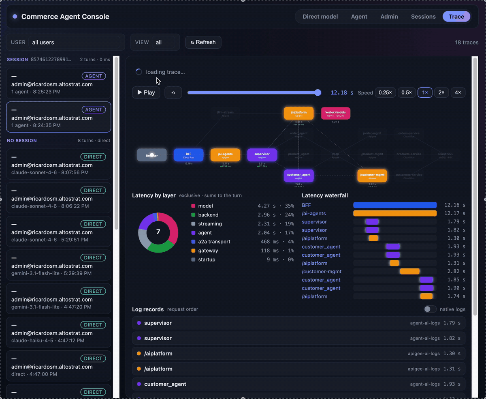

Governing Enterprise Multi-Agent Systems on Google Cloud
A Replicable Reference Architecture with Vertex AI Agent Engine, A2A Protocol, and Apigee X
Single-model chatbots are evolving into coordinated multi-agent networks
1. Workflow Decomposition
Moving from monolithic, single-prompt chatbots to supervisor agents that orchestrate domain specialists.
2. Autonomous Action
Specialists interact directly with business systems through the Model Context Protocol (MCP) and REST APIs.
3. Distributed Operations
Transactions span multiple microservices, relational databases, and distinct operational boundaries.
Google Cloud provides the core building blocks for enterprise multi-agent architectures
Agent Engine
Managed Vertex AI Reasoning Engines running ADK agents with built-in scaling.
A2A Protocol
Standardized protocol for agent discovery, skill cards, and token streaming.
Apigee X
Enterprise gateway for token quotas, developer keys, and policy enforcement.
Cloud Run & SQL
Serverless compute and managed MySQL connected privately via PSC.
Unmanaged agent deployments create ungoverned model access and untracked token spend
Shadow LLMs & Broad Credentials
- Agents invoke foundational models directly using static service account keys.
- No per-user identity enforcement at the model perimeter.
- No capability to revoke access for one user without breaking the entire agent.
Zero Cost Attribution
- Cannot answer: "Who spent the tokens, on which model, through which agent?"
- Token consumption is unmetered until the monthly cloud invoice arrives.
- Answering basic billing questions requires building custom log pipelines.
Multi-hop agent delegations turn production transactions into opaque black boxes
Where did the 12-second latency spike or 500 error actually occur?
Disparate Silos
Logs scattered across multiple GCP projects and service boundaries.
No Shared Clock
Timing metrics formatted differently with inconsistent epoch precision.
Broken Trace Context
Traceparent lost during A2A handoffs or MCP tool invocations.
Standard agent prototypes introduce critical identity, network, and database vulnerabilities
Spoofable Identity Headers
Prototypes trust raw incoming HTTP headers (e.g. X-User-Email) instead of cryptographically verifying signed JWT tokens.
God-Mode Service Accounts
All agents share a single over-privileged service account with unrestricted cross-project access.
Publicly Exposed Backends
Internal microservices accept public traffic, relying solely on simple API keys at the perimeter.
Static Database Secrets
Database passwords passed in plaintext environment variables rather than using IAM database authentication.
Brittle agent coupling and unrepeatable environments stall production operations
Brittle Coupling
Vertex AI produces a new engine ID per deploy. Hardcoded IDs mean redeploying a specialist breaks the supervisor.
Configuration Drift
Manual console clicks and hardcoded project IDs cause builds to work in one project but fail in the next.
Undocumented Edges
A2A token streaming under ADK 2.3 and bidirectional Private Service Connect lack working production reference implementations.
Three projects enforce strict separation of concerns across AI, governance, and data
AI Project (ai)
- 4 Agent Engines (Supervisor + 3 Specialists)
- BFF Cloud Run behind IAP
- Firestore ACL & Secret Manager
- Single-Pane Telemetry Sink
Apigee Project (gateway)
- Apigee X Organization (7 Proxies)
- API Products & Token Quotas
- Per-User / Per-Agent Apps & Keys
- Token Minting SAs (Access & ID tokens)
Backend Project (backend)
- 3 FastAPI Microservices (Cloud Run)
- Cloud SQL MySQL (IAM DB Auth)
- Regional Internal Load Balancer
- PSC Service Attachment to Apigee
Apigee acts as the single governance gateway across models, tools, and backend APIs
| Base Path | Fronts | Caller Credential | Upstream Credential (Minted by Apigee) |
|---|---|---|---|
/ai-agents |
Supervisor Engine | BFF x-api-key |
GoogleAccessToken (AI Deploy SA) |
/aiplatform |
Model Calls from Agents | Agent x-api-key |
GoogleAccessToken (AI Deploy SA) |
/llm-stream |
Direct Model Chat (Gemini & Claude) | End User Personal x-api-key |
GoogleAccessToken (AI Deploy SA) |
/mcp |
MCP Tool Catalog & Execution | Specialist x-api-key |
Internal Private MCP Routing |
/*-management |
E-Commerce Services (Customers/Orders/Products) | MCP Server | GoogleIDToken (Dedicated Invoker SA) |
Per-user API keys bound to IAP identities enforce token quotas before model execution
Key-to-Identity Binding
VerifyAPIKey validates that the key's owner_email matches the verified IAP email. Stolen keys are immediately rejected with 403.
Edge Token Quotas
LLMTokenQuota enforces rate limits before model invocation: 100k tokens/hour per agent, 10k tokens/5min per user.
Dual-Publisher Support
Gemini and Claude routed seamlessly behind the same gateway endpoint, governed under identical security and budgeting rules.
Domain specialists encapsulate scoped MCP toolsets under least-privilege service accounts
order_agent
Identity: a2a-order-sa
Tools: 6 scoped MCP tools (listOrders, createOrder, getOrderById, etc.)
Secret: apigee-key-order
product_agent
Identity: a2a-product-sa
Tools: Scoped catalog search, product detail, and inventory queries.
Secret: apigee-key-product
customer_agent
Identity: a2a-customer-sa
Tools: Scoped account lookup, address verification, and profile management.
Secret: apigee-key-customer
The supervisor coordinates over A2A with token streaming and dynamic self-healing discovery
A2A Token Streaming (ADK 2.3)
RemoteA2aAgentproxies with streaming client factory.- Tokens stream in real time as specialists generate them.
- UI reveals delegation the instant
transfer_to_agentemits.
Registry Self-Healing (~60s TTL)
- Specialists auto-register in Agent Registry upon deployment.
- Supervisor refreshes cache every 60s via
before_agent_callback. - Specialists redeploy cleanly with zero supervisor redeployments.
Dynamic, Firestore-backed ACLs enforce fail-closed authorization per conversation turn
Turn-Level Evaluation
Evaluated on every query in before_agent_callback using the verified IAP identity. Instant permission revocation.
Fail-Closed Safety Net
Missing user record = zero agent access. before_tool_callback provides an unbypassable execution barrier.
Live UI Administration
Administrators manage roles and user-agent bindings directly in the Admin UI without modifying code or redeploying.
The entire data path is private by construction with Private Service Connect and IAM database auth
Verified IAP Identity
Cloud Run BFF verifies cryptographic signature of X-Goog-IAP-JWT-Assertion. Spoofable plaintext headers are ignored.
Bidirectional PSC
Northbound (AI ➔ Apigee) and Southbound (Apigee ➔ Backend) cross-project traffic routes strictly over Google private backbone.
IAM-Only Services
Backend Cloud Run services require Google ID token authentication; only Apigee's dedicated invoker SA is authorized.
Passwordless Cloud SQL
Cloud SQL MySQL uses IAM database auth. The runtime service account ecommerce-sa IS the database user. Zero DB passwords.
A single traceparent correlates every hop from browser to database across four named logs
| Log Name | Written By | One Entry Per | Key Telemetry Fields |
|---|---|---|---|
front-ai-logs |
BFF Cloud Run | UI Turn | user, view, userMessage, latency_metrics, error |
agent-ai-logs |
Agent Engines | Engine Record | engine, agent, session_id, model_call tokens, tool_call |
apigee-ai-logs |
7 Apigee Proxies | Gateway Hit | user, app, model, promptTokens, quotaRemaining, 4 timestamps |
services-ai-logs |
Microservices | HTTP Request | service, verb, path, status, latencyMs |
All logs reside in the AI project on a single canonical schema: event, component, traceparent, latency_metrics.
The Trace Explorer replays transactions with exact latency attribution across all three projects

Reconstructed multi-agent transaction flow with packet replay, latency breakdown donut, and millisecond waterfall.
Edge Data Collectors deliver comprehensive token analytics and metrics without an ETL pipeline

Apigee Reports: Token counts by model & user.

Cloud Monitoring: Live calls/min & p95 latency.
One environment file and three declarative manifests drive automated convergence
Declarative State
demo-environment.yaml(Single source of project IDs, regions, admin identity)agents/runtime-manifest.yaml(Agent infra, SAs, ACL seed)apigee/provision/manifest.yaml(Products, quotas, keys)services/services-manifest.yaml(VPC, Cloud SQL, ALB)
Consistent CLI Grammar
| Command | Action |
|---|---|
tool --check | Read-only drift report |
tool --dry-run | Preview planned writes |
tool (bare) | Report ➔ interactive confirm |
tool --apply | Non-interactive CI apply |
Automated guardrail tests fail the build on hardcoded IDs, documentation drift, and contract mismatches
Zero Hardcoded IDs
test_demo_env.py and test_docs_guard.py scan all manifests and docs, failing if literal project IDs/numbers appear.
Manifest Consistency
test_manifest_consistency.py validates cross-manifest contracts: SA names, secret accessors, audiences, and target servers.
Offline CI Execution
The entire pytest tests/ suite runs in seconds without requiring active GCP credentials or live cloud connections.
Six production-proven patterns worth lifting directly into your own enterprise deployments
1. A2A Token Streaming under ADK 2.3: Working client-factory and SSE converter hooks.
2. Registry Self-Healing: Dynamic sub-agent discovery with zero supervisor redeployments.
3. Apigee as LLM Gateway: Per-user key binding, token quotas, and dual Gemini/Claude routing.
4. End-to-End Tracing: In-band W3C traceparent propagation from browser to database.
5. Check/Apply Provisioners: Converging, drift-detecting CLI tooling driven by declarative manifests.
6. Zero-ETL Token Analytics: Gateway Data Collectors feeding custom reports without data pipelines.
Enterprise agent governance is ready today
Deploy it across three fresh projects, inspect the implementation, and lift the patterns you need.
GitHub Repository: https://github.com/ricardosmh/adk-apigee-multiagent-demo
End-to-End Runbook: docs/GETTING_STARTED.md (Phases A–E)
License: Apache 2.0 Open Source